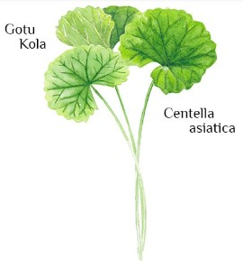

PHOTOS:

Botanical Name: Centella asiatica
Common name: Mandukalparni
A member of the parsley family, it has no taste or smell. It thrives in and around water. It has small fan-shaped green leaves with white or light purple-to-pink flowers and small oval fruit. The leaves and stems of the plant are used as medicine. It is most often used to treat varicose veins and chronic venous insufficiency, a condition where blood pools in the legs. It is also used in ointments to treat psoriasis and help heal minor wounds.